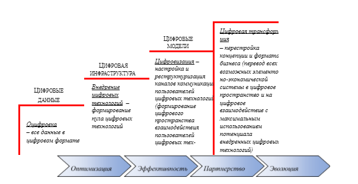
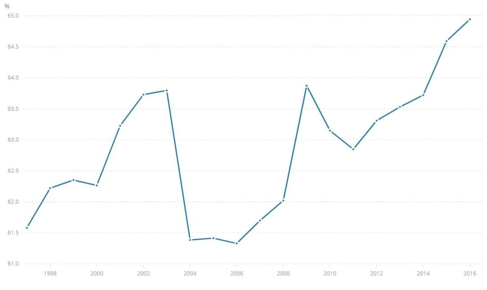

Марина Николаевна Руденко – доктор экономических наук, доцент, заведующая кафедрой предпринимательства и экономической безопасности Пермского государственного национального исследовательского университета.
Юрий Иванович Грибанов – кандидат экономических наук, доцент Академии цифровой экономики
(г. Пермь).
В последние годы значительное внимание уделяется феномену цифровой экономики, исследованию которой посвящено значительное число научных работ [1-5 и др.]. В то же время, не до конца исследованным остается вопрос о взаимосвязи цифровой экономики с глубинными, фундаментальными тенденциями развития экономической системы в целом. В данной статье авторы намерены в некоторой мере восполнить этот пробел.
Отметим, что развитые страны мира уделяют пристальное внимание гармоничному развитию системообразующих элементов цифровой экономики. Понимание необходимости перехода к этому типу экономики сложилось и в России, что, в частности, нашло отражение в формировании специальной государственной программы «Цифровая экономика Российской Федерации» (утв. Правительством Российской Федерации 28 июля 2017 г. распоряжением № 1632-р). По нашему мнению, для России важно как можно быстрее трансформировать традиционную экономику в современную – цифровую. Это – безальтернативный путь развития. Иначе неизбежны дальнейшие социальные, экономические кризисы и, как следствие, политическое неравновесие, что, в свою очередь, может действовать как положительная обратная связь и еще глубже погружать страну в технологическое, а затем и социально-экономическое отставание от передовых стран мира.
Как показывают наши исследования, проведенные под эгидой Академии цифровой экономики, большинство российских компаний и органов исполнительной власти сейчас сосредоточены на цифровизации ключевых процессов и в массе своей воспринимают цифровизацию как новый виток автоматизации и информатизации. В связи с этим, по нашему мнению, следует разграничить цифровизацию и цифровую трансформацию в сравнении с автоматизацией.
Автоматизация представляет собой «одно из направлений научно-технического прогресса, использующее саморегулирующие технические средства и математические методы с целью освобождения человека от участия в процессах получения, преобразования, передачи и использования энергии, материалов, изделий или информации, либо существенного уменьшения степени этого участия или трудоёмкости выполняемых операций. Автоматизируются практически все сферы жизни и деятельности человека. Автоматизация позволяет повысить производительность труда, улучшить качество продукции, оптимизировать процессы управления, отстранить человека от производств, опасных для здоровья» (см.: https://www.retail.ru/glossary/automation).
Цифровизация, в свою очередь, это процесс, направленный на оцифровку всех информационных (и даже материальных) ресурсов (создание цифровых копий) и формирование сетевых платформ взаимодействия, с целью получения прогнозируемого и гарантированного результата на любое управляющее воздействие с использованием средств автоматизации [6]. В силу необходимости перехода к цифровой экономике, в новых экономических условиях все субъекты социально-экономической системы, стремящиеся к устойчивому функционированию, вынуждены проходить через процесс цифровой трансформации.
Цифровая трансформация – это внедрение современных цифровых технологий в бизнес-процессы социально-экономических систем всех уровней. Этот подход подразумевает не только установку современного оборудования или программного обеспечения, но и фундаментальные изменения в подходах к управлению, корпоративной культуре, внешних коммуникациях. В результате повышаются производительность каждого сотрудника и уровень удовлетворенности клиентов, а компания приобретает репутацию прогрессивной и современной организации. На практике это означает создание системы сквозных бизнес-процессов, которую можно назвать цифровой экосистемой бизнеса.
Цифровизация процессов актуальна не только на уровне отдельных предприятий: целые отрасли выбирают для себя этот путь развития как единственную возможность соответствовать стремительно меняющимся условиям окружающего мира. Благодаря этому цифровая трансформация промышленности, розничной торговли, государственного сектора и других сфер уже сегодня меняет жизнь каждого человека и каждой компании. Это обусловливает необходимость изучения проблематики цифровой трансформации с позиций системного подхода применительно ко всем сферам социально-экономического устройства и жизни общества.
Таким образом, мы считаем, что термин «цифровизация» должен использоваться для описания трансформации, которая идет дальше, чем просто замена аналогового или физического ресурса на цифровой или информационный. К примеру, книги не просто превращаются в электронные книги, а предоставляют целый набор интерактивных и мультимедийных файлов, имеющих самостоятельное значение. Соответственно, в социально-экономической системе процессы могут стать онлайн диалогами между сторонами, которые раньше напрямую даже не общались. В деловом контексте, организация, которая хочет стать «цифровой», должна фокусироваться на автоматизации процессов, с целью сделать их более эффективными. По контрасту, компания, фокусирующаяся на «цифровизации», должна нацеливаться на то, чтобы более эффективно получать отдачу от этих процессов, через более высокую вовлеченность заказчиков.
На последнем обстоятельстве мы хотим сосредоточить внимание. Мы вернемся к нему в дальнейшем, пока же лишь подчеркнем, что переход к цифровой экономике связан с ростом вовлеченности заказчиков (покупателей, потребителей) в бизнес исполнителя (продавца, производителя).
Цифровая трансформация обеспечивает максимально полное раскрытие потенциала цифровых технологий через их использование во всех аспектах бизнеса – процессах, продуктах и сервисах, подходах к принятию решений. Важно подчеркнуть, что для цифровой трансформации никогда не будет достаточно только лишь наличия технологии как таковой. Для того, чтобы процесс цифровой трансформации был полноценным, необходимы четко сформулированные бизнес-задачи и данные. Таким образом, цифровую трансформацию возможно рассматривать только на пересечении всех трех измерений (сформулированной бизнес-задачи, наличия данных и собственно технологий).
Основные преимущества, которые несет цифровая трансформация всем хозяйствующим субъектам, следующие: оптимизация процессов; поиск новых потоков доходов; создание персонализированной и привлекательной инфраструктуры обслуживания. Анализ представленных преимуществ показывает, что наиболее существенно они проявляются при оказании услуг, что определяется известными свойствами услуг, такими как их персонализированный характер, ориентированность на взаимодействие исполнителя (производителя) и заказчика (потребителя), нематериальный и – зачастую – информационный характер и др.
Предприятия и организации, как сферы услуг, так и других секторов экономики, быстро заменяют традиционные процессы взаимодействия цифровыми, используя современные технологии. Однако самым трудным изменением для традиционных отраслей экономики будет, на наш взгляд, не столько создание и интеграция технологий, сколько принципиальная перестройка корпоративной культуры и организации. Итеративный, адаптивный подход, более высокая толерантность к риску, характерные для предпринимательского менталитета, во многом чужды устоявшимся подходам к управлению крупным бизнесом. Сложно принять, что структура любой отрасли и компании сегодня, в условиях «цифрового перехода», должна восприниматься как основная переменная, а не константа.
К четырем технологическим основам цифрового развития, на которых целесообразно выстраивать процесс цифровой трансформации бизнеса, традиционно относят: «большие данные», социальность, мобильность, облачность. Их сочетание позволяет существенно удешевить бизнес-процессы, аналитически адаптировать продукты к потребностям каждого конкретного клиента (кастомизация) и поставлять товары и услуги тогда и туда, где они необходимы. Цифровое развитие осуществляется поэтапно (см. рис. 1).

Рис. 1. Последовательность цифровой трансформации (составлено Ю.И. Грибановым)
Теперь же мы вернемся к сделанному ранее замечанию, к которому мы обещали вернуться в дальнейшем анализе. Именно на кастомизации мы хотим сделать акцент, т.к. она является предпосылкой стремительной сервисизации хозяйственной деятельности, которая проявляется в экономиках всех стран мира, даже малоразвитых, а в развитых является одной из ключевых тенденций развития. Таким образом, цифровая трансформация оказывается тесно связанной с опережающим развитием сферы услуг, наблюдаемом начиная с последней четверти ХХ века и по настоящее время (см. рис. 2). В новой экономике речь идет о развитии сетевых форм взаимодействия, в рамках которых предприятия, в отличие от традиционных схем производственной кооперации, обмениваются не материальными продуктами, а услугами [7].
Рис. 2. Доля сферы услуг в мировом ВВП (составлено по данным Всемирного Банка)
В заключение нашего анализа отметим, что цифровизация в современной экономике идет полным ходом, а, соответственно, цифровая трансформация бизнеса и общества неизбежна, это только вопрос времени. При этом данная тенденция тесно связана с другой, хорошо известной и описанной в литературе тенденцией сервисизации экономики [8], закрепляя её и формируя для нее технологическую основу.
8. Руденко М.Н., Вертакова Ю.В., Курбанов А.Х., Репин Н.В., Михайлов О.В. Информационное обеспечение управления регионом и организациями с использованием аутсорсинга. Курск, 2019.